Saltar a contenido
Saltar a navegacion
HORÓSCOPO
Inicio
Galeria de Signos
Formulario
Tabla de Signos
Simbolo Indentificador de cada Signo
Aries
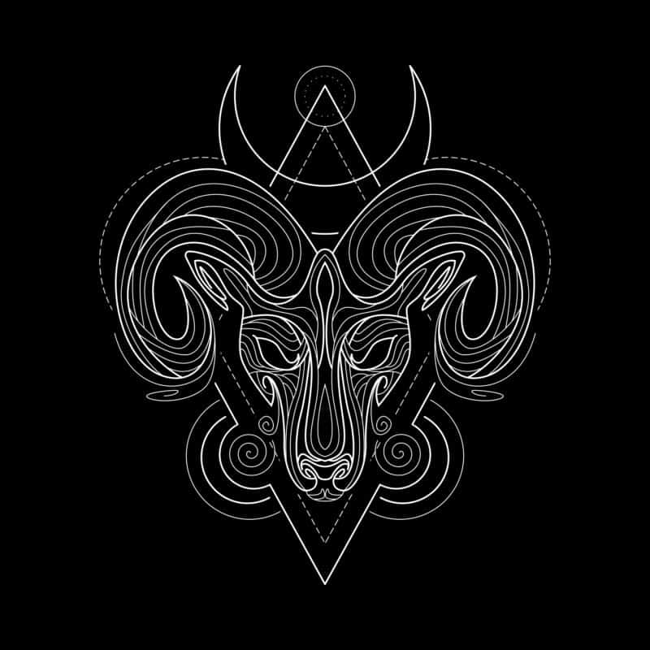
Tauro
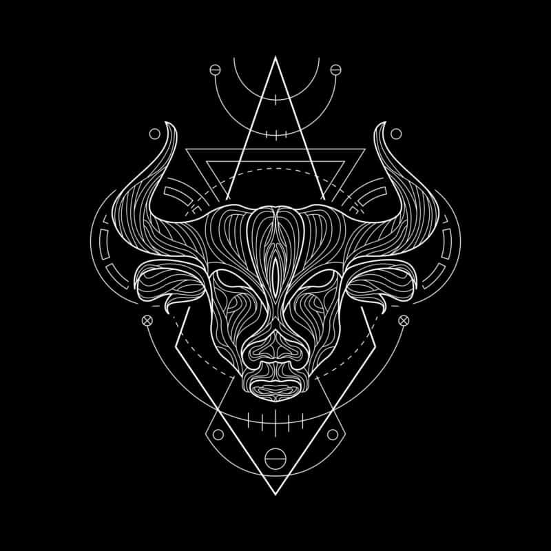
Geminis
Cancer
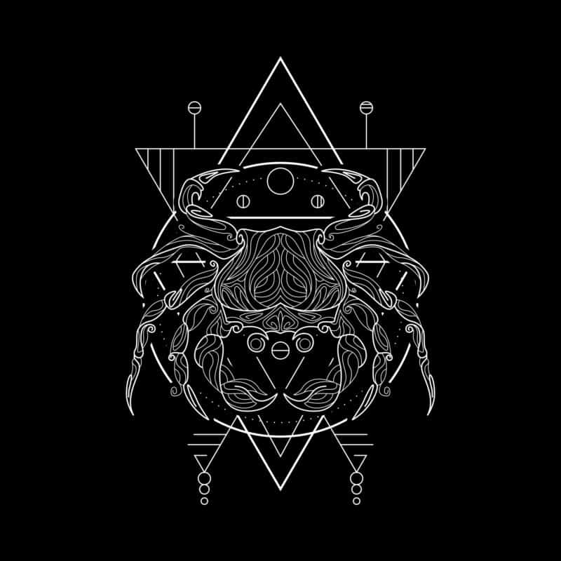
Leo
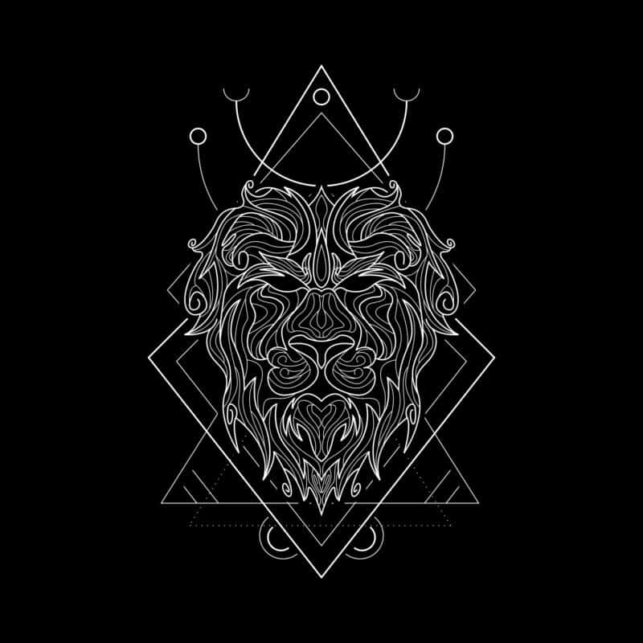
Virgo
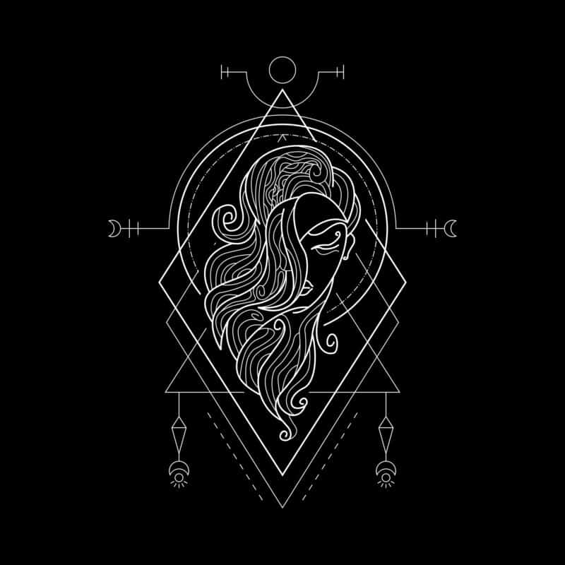
Libra
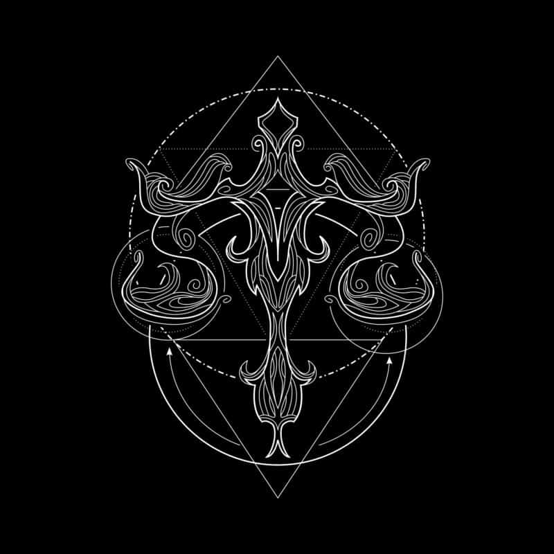
Escorpio
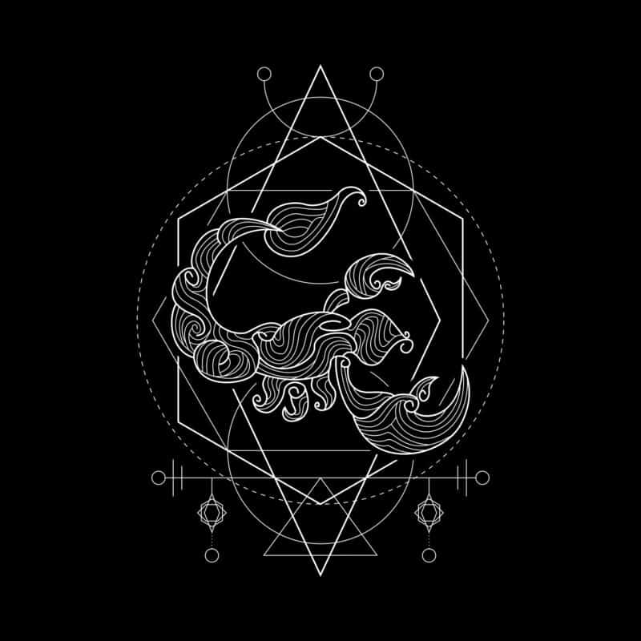
Sagitario
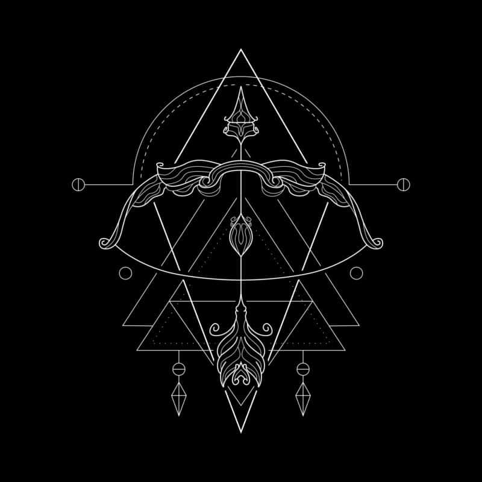
Capricornio
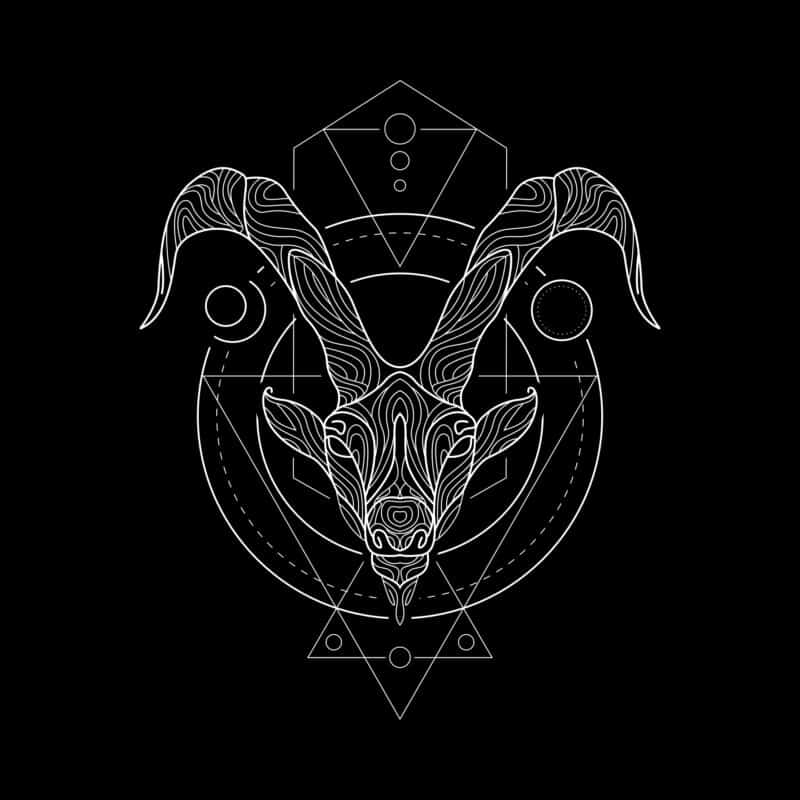
Acuario
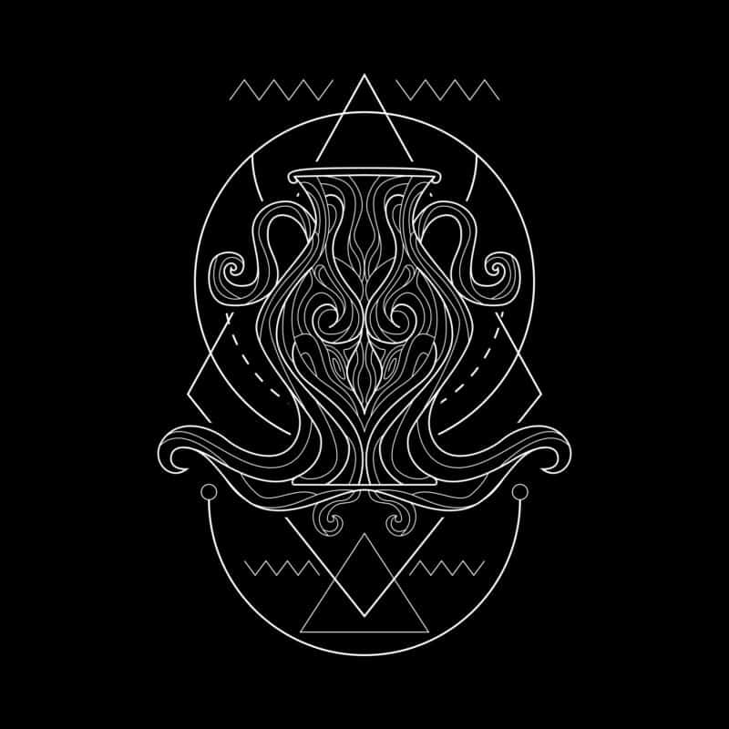
Piscis
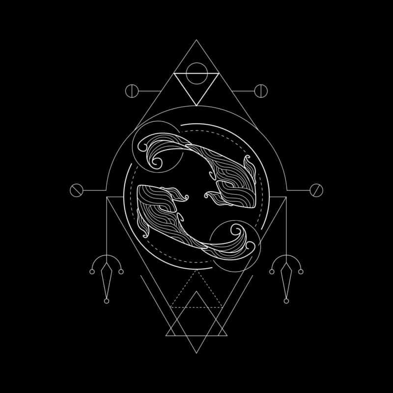